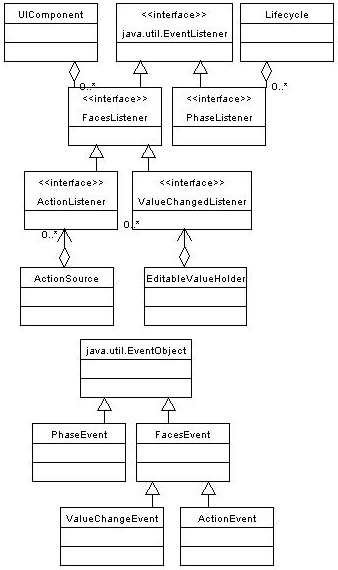

|
||||||||||
| PREV PACKAGE NEXT PACKAGE | FRAMES NO FRAMES | |||||||||
See:
Description
| Interface Summary | |
| ActionListener | A listener interface for receiving ActionEvents. |
| FacesListener | A generic base interface for event listeners for various types of
FacesEvents. |
| PhaseListener | An interface implemented by objects that wish to be notified at the beginning and ending of processing for each standard phase of the request processing lifecycle. |
| ValueChangeListener | A listener interface for receiving ValueChangeEvents. |
| Class Summary | |
| ActionEvent | An ActionEvent represents the activation of a user interface
component (such as a UICommand). |
| FacesEvent | FacesEvent is the base class for user interface and
application events that can be fired by UIComponents. |
| PhaseEvent | PhaseEvent represents the beginning or ending of
processing for a particular phase of the request processing lifecycle,
for the request encapsulated by the specified FacesContext. |
| PhaseId | Typesafe enumeration of the legal values that may be returned by the
getPhaseId() method of the FacesEvent interface. |
| ValueChangeEvent | A ValueChangeEvent is a notification that the local value of
the source component has been change as a result of user interface
activity. |
| Exception Summary | |
| AbortProcessingException | An exception that may be thrown by event listeners to terminate the processing of the current event. |
Interfaces describing events and event listeners, and concrete event
implementation classes. All events extend from FacesEvent and all listeners extend from FacesListener.
For your convenience here is a UML class diagram of the classes in this package.

|
||||||||||
| PREV PACKAGE NEXT PACKAGE | FRAMES NO FRAMES | |||||||||